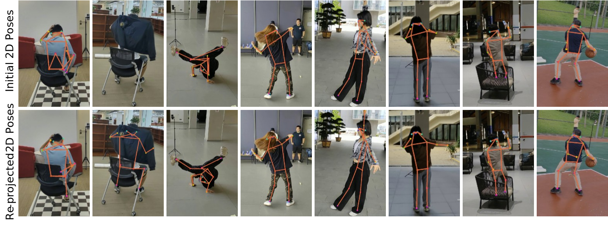

Get started with FreeMan annotations! Keypoints, SMPL and some failure cases from our annotation pipeline are shown here.
Effect of Re-projecting 3D pose
To alleviate the effect of occlusion in single view, we re-project 3D pose to 2D pose and compare the 2D pose before/after re-projection. Here shows the comparison of 2D pose annotation before/after re-projection.
Comparison of 2D pose annotation before/after re-projection
SMPL Annotation
With 3D keypoints obtained by multi-view triangulation, we fit SMPL into the 3D keypoints and obtain SMPL parameters. Here shows some examples of SMPL annotation in FreeMan.

SMPL Failure Cases
Here shows failure cases of fitted SMPL annotations. Mostly the failures are resulted from incorrect fitting.
Credits: Great thanks to awesome works related.
Datasets: Human3.6M, HuMMan, 3DPW
Codebase: mmHuman3D